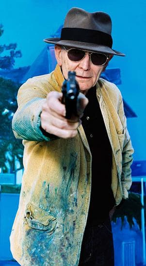

Biographie

Jacques Monory est né à Paris en juin 1924. Il vit et travaille à Cachan (Val de Marne)
Jacques Monory naît à Paris d’une mère couturière et d’un père argentin, chauffeur pour les dames ou pour les révolutionnaires des Brigades internationales. Allergique à la scolarité, il réussit pourtant en 1939 le concours d’entrée de l’Ecole des arts appliqués à l’Industrie dont il sera diplômé et où il étudie la peinture, le graphisme, la décoration et la fresque (1939-1944).
Il travaille dix ans avec l’éditeur Robert Delpire et se trouve alors en contact avec l’univers des documents photographiques, des reproductions, des magazines et des livres d’art, ce qui infl uencera particulièrement sa pratique picturale. En 1952 a lieu sa première exposition personnelle à Paris, remarquée par la presse de l’époque et poursuit, à côté et en marge de cette activité, une peinture toute d'opposition à ce travail quotidien.
Après une période de figuration à forte coloration onirique, succède (1957-58) des collages à partir de photographes en couleur.
Vers 1962, Monory commence à amorcer un mouvement qui aboutira, en 1965, à une image plus précise. Le chemin de Monory, entre 1963 et 1965, marque sa propre libération vers une image plus nette et plus froide. Il participe à l'exposition " Mythologies quotidiennes" en 1964 au Musée d'art moderne de la ville de Paris.
Jacques Monory a été l'un des principaux représentants du courant de la "Figuration narrative", qui, dans les années 60, s'est opposé à la fois à la peinture abstraite, géométrique, cinétique ou informelle et à l'art des nouveaux réalistes. Ses tableaux suggèrent des atmosphères lourdes et menaçantes.